Del máster a producción
Ingeniería de software dirigida por especificaciones con agentes de IA, aplicada a tres productos reales.
Jorge Chamorro
Máster en Desarrollo de Software con IA
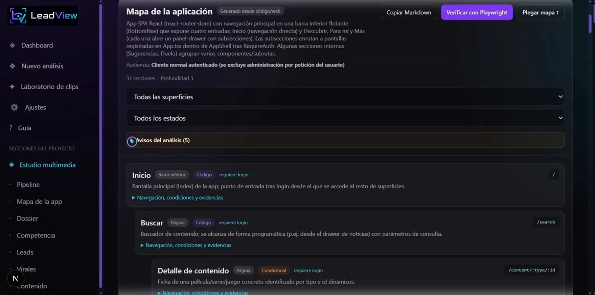
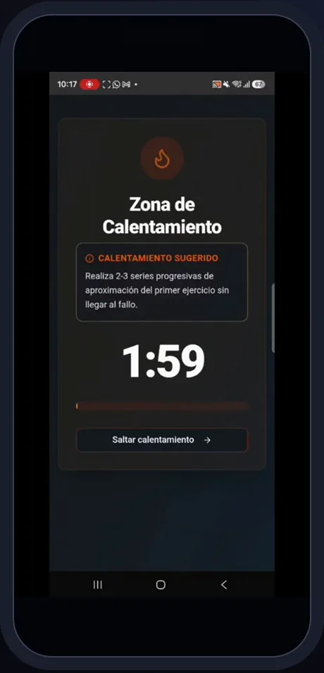
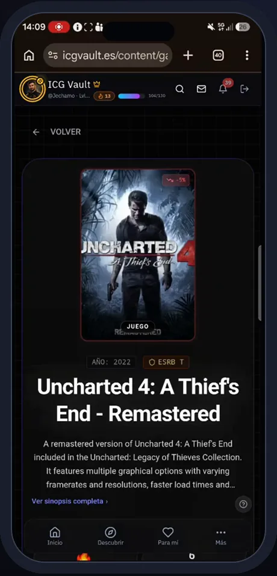
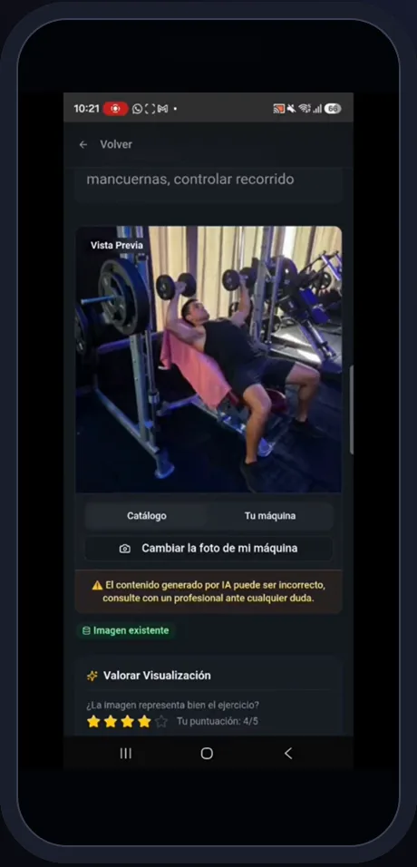
Un método y tres productos reales.
Sistema SDD/TDD con agentes
Kit instalable con npx que gobierna a los agentes: especificación primero, TDD con evidencia y la persona decide en seis puertas.
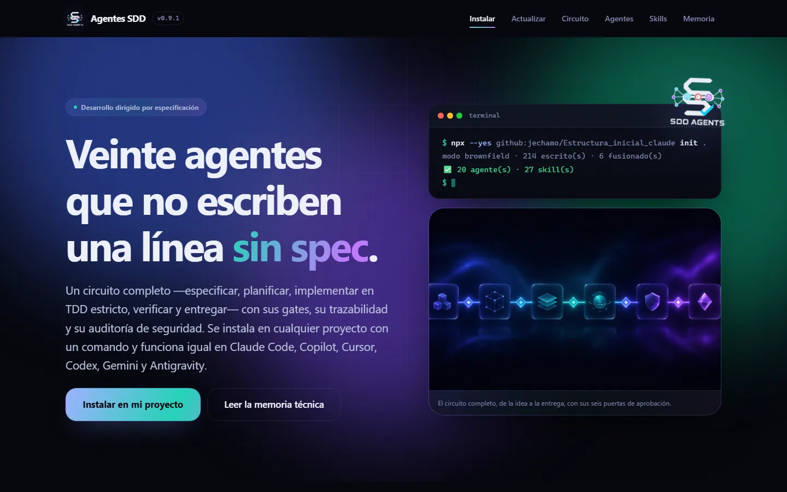
RRSS Studio greenfield · local
Nació con el método: analiza un producto y crea contenido para redes con IA.
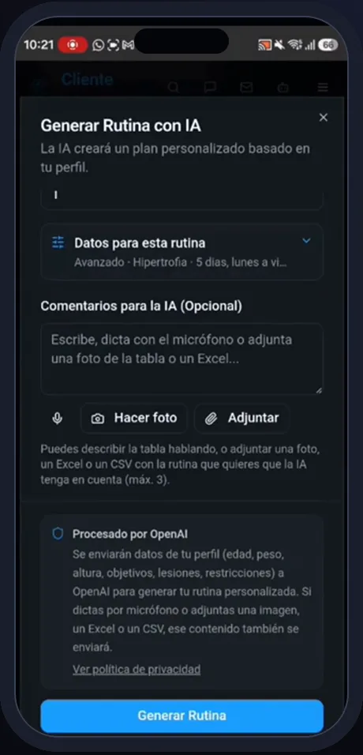
ChaFit en producción · web, iOS y Android
Entrenamiento para clientes, entrenadores y gimnasios, con 7 specs y TDD.
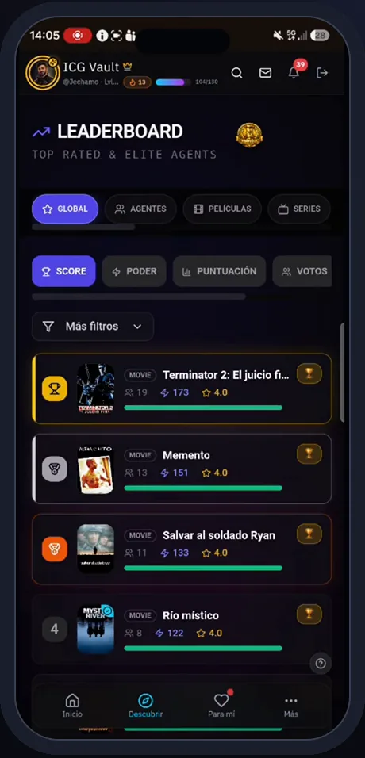
ICG Vault en producción · web, iOS y Android
Red social de cine, series y videojuegos, auditada con el modelo SDD.
.env en el historial y auditoría con vulnerabilidades · acceso para el tribunalLos agentes escriben deprisa.
Sin método, esa velocidad se paga.
Se autocertifican
El mismo agente planifica, implementa y se da por bueno.
Contratos implícitos
La IA devolvía 7 u 8 columnas; la app esperaba 9: 317 filas desplazadas en ChaFit.
Sin rastro
Nadie sabe por qué se decidió algo ni qué llegó a producción.
Seguridad al final
Permisos demasiado amplios en la capa de datos, descubiertos tarde.
ChaFit e ICG Vault nacieron en un generador low-code y crecieron a base de chat. Funcionaban, pero no eran mantenibles.
La spec manda, el test demuestra
y la persona decide.
Especificación primero
Nada de código sin spec aprobada: EARS, Gherkin, seguridad y usabilidad.
El rojo, a la vista
RED demostrado → GREEN → REFACTOR. «Pasa» sin ejecutar no cuenta.
Verificación fuera del modelo
Territorios, trazas, secretos y gates los comprueba código, no el agente.
La persona decide
Producto, arquitectura, spec, diseño, plan y entrega.
Un kit instalable con npx en cualquier repositorio · Claude Code · Copilot · Cursor · Codex · Gemini CLI · Antigravity · Node ≥ 18, sin dependencias.
Diez fases, seis puertas, tres niveles.
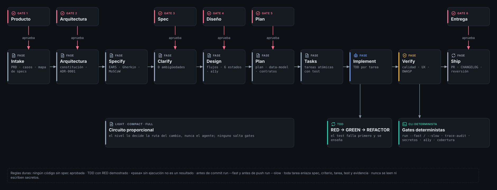
20 agentes. Solo 3 delegan. Quien juzga no escribe.
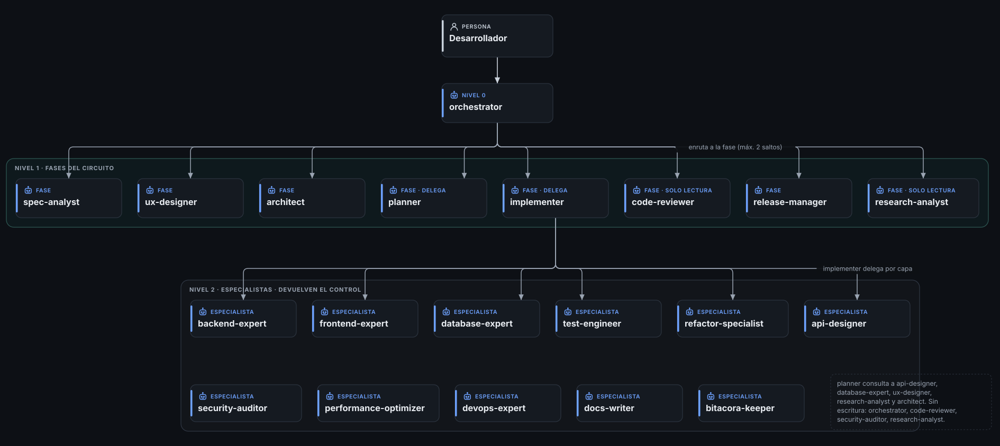
Agentes que proponen, scripts que verifican.
- spec-analyst escribe requisitos EARS y criterios Gherkin. Gate 3
- planner: plan, datos, contratos y tareas atómicas, cada una con su test. Gate 5
- implementer: TDD tarea a tarea;
guard-writeyguard-bashvigilan y los hooks registran. - code-reviewer y security-auditor, de solo lectura: GO sin CRÍTICO ni ALTO.
- release-manager: PR, CHANGELOG y reversión. Gate 6
Evidencia real de la spec 001 de ChaFit: el rojo se demuestra antes del verde.
Un sistema, tres aplicaciones.
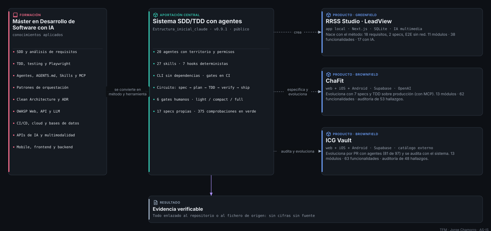
RRSS Studio · LeadView
Analiza tu app desde su URL y su código, estudia a tu competencia, encuentra clientes y produce vídeos verticales con IA, viendo el coste antes de gastar.
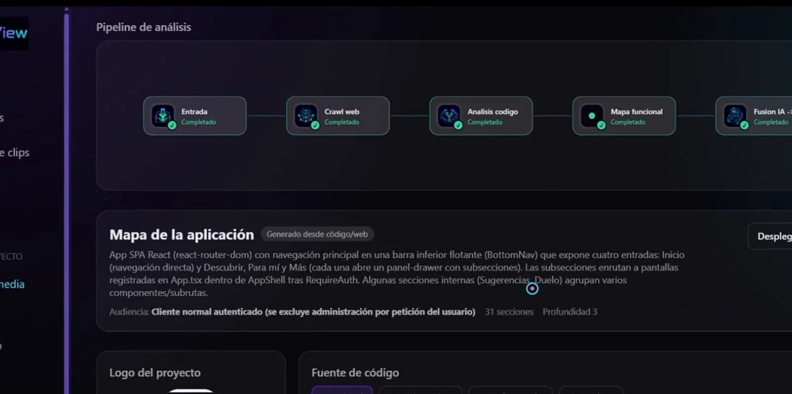
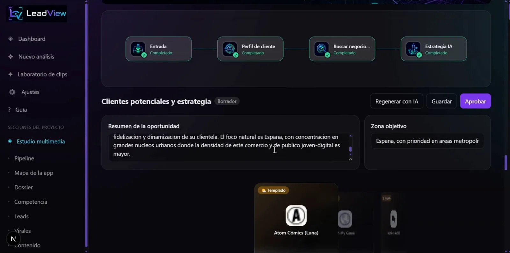
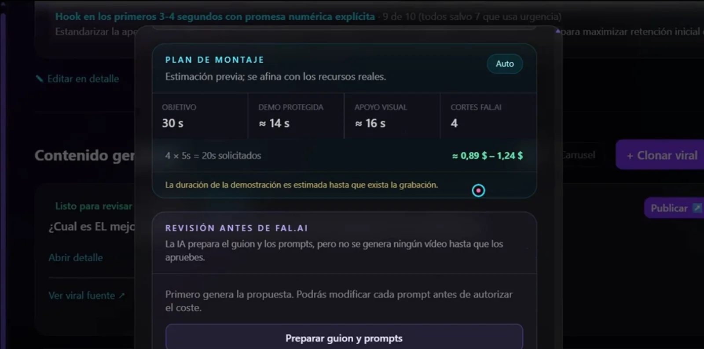
Monolito modular local: un proceso, muchas IA.
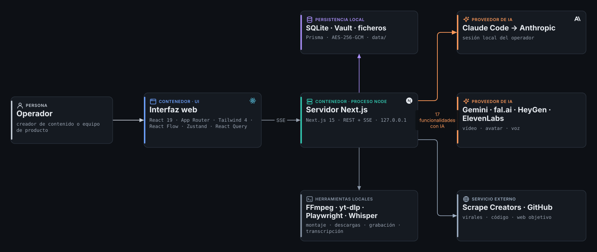
.env ni vuelven a la interfaz.ChaFit
Clientes, entrenadores y gimnasios en una plataforma: rutinas y dietas con IA, ejecución guiada, la ilustración de tu propia máquina y foto al plato.
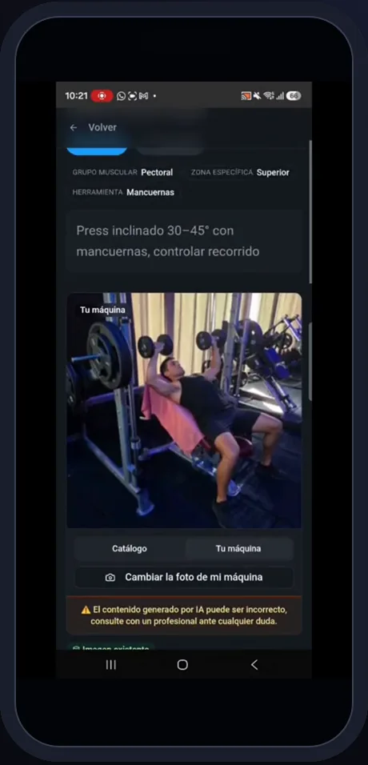
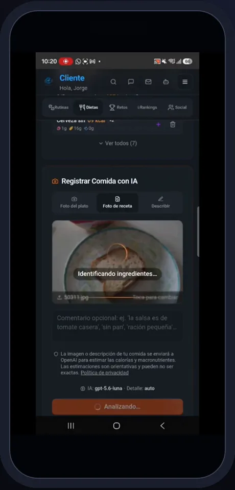
Una SPA, tres plataformas; claves solo en el servidor.
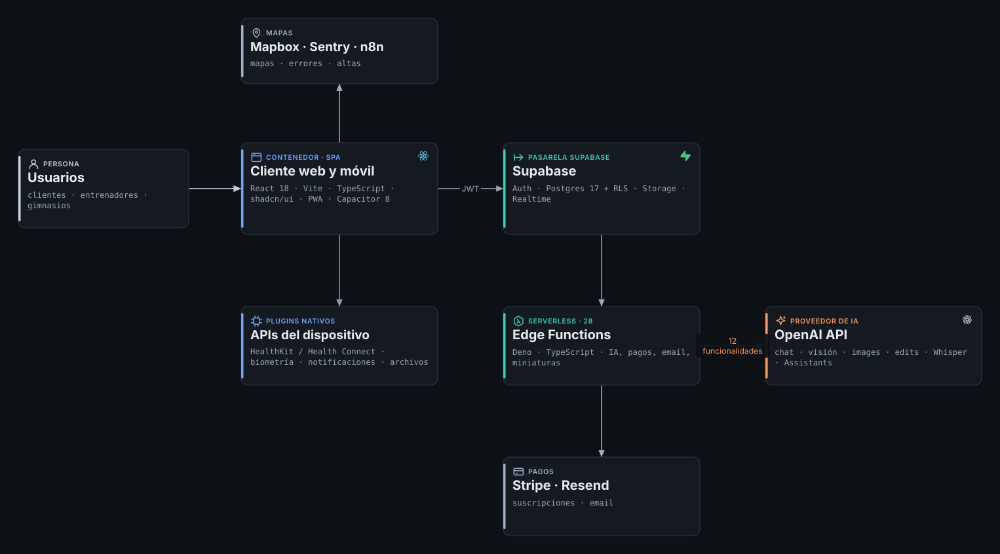
ICG Vault
Vota cine, series y videojuegos con un voto que pesa más cuanto más nivel tienes; colecciona, personaliza con IA y juega cada día.
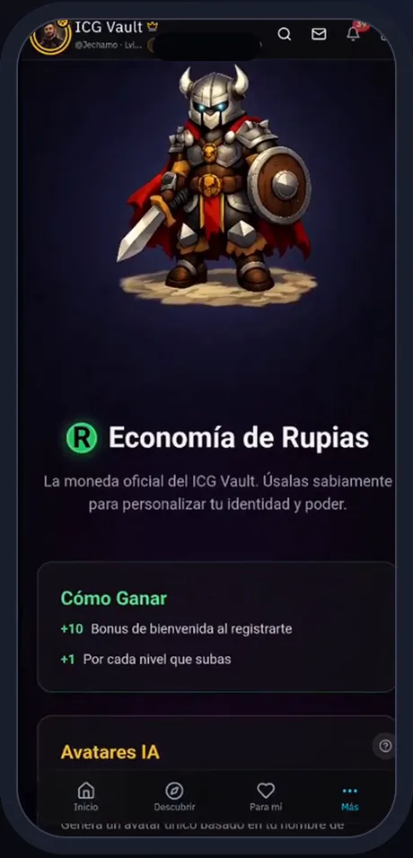
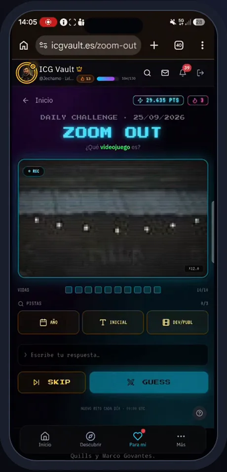
Reglas del juego en SQL; catálogo tras un proxy.
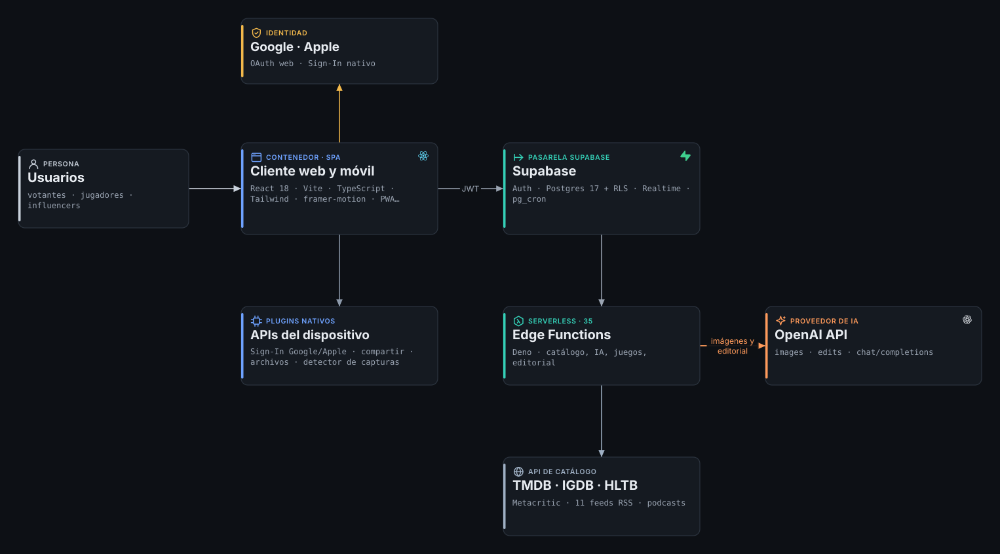
32 integraciones, 33 funcionalidades con IA.
| RRSS Studio | ChaFit | ICG Vault | |
|---|---|---|---|
| Modelos de IA | Claude Code CLI · Gemini · fal.ai · HeyGen · ElevenLabs · Whisper local | OpenAI: texto, visión, imagen, edición, Whisper y Assistants | OpenAI: imagen, edición y borradores editoriales |
| Con IA | 17 de 38 | 12 de 62 | 4 de 63 |
| Otros servicios | Scrape Creators · GitHub · web analizada | Stripe · Mapbox · Resend · n8n · Sentry | TMDB · IGDB · HLTB · Metacritic · RSS · Google · Apple |
| Credenciales | Vault cifrado local | Secretos de Edge Functions | Secretos de Edge Functions |
| Control de coste | Plan y coste antes de gastar | Cupos por usuario | Rupias y acciones de administración |
El sistema también audita lo ya construido.
- orchestrator diagnostica, reparte el trabajo y contrasta cada conclusión con el código y la base real.
- database-expert: producción por MCP de Supabase (políticas, funciones, permisos, Storage), sin leer datos personales.
- security-auditor con la skill
security-scan: OWASP Web 2025, API 2023, LLM 2025 y ASVS 5.0. - code-reviewer y performance-optimizer: buenas prácticas, arquitectura y rendimiento.
- ux-designer: UI, usabilidad (Nielsen) y accesibilidad WCAG 2.2 AA.
Modelos de Anthropic, OpenAI y Google; ejecución observada por los hooks. Cada hallazgo lleva evidencia, corrección, riesgo del cambio y rollback.
Tests ejecutados, no declarados.
- run --fast antes de commit, run --slow antes de push y trace-audit contra la base exacta en CI.
- Cobertura con trinquete (48,3 % en el sistema SDD): el umbral solo puede subir.
Desde el diseño, no al final.
- Cada spec declara su impacto de seguridad; si es sensible: control → tarea → test → evidencia.
- OWASP Web 2025, API 2023, LLM 2025 y ASVS 5.0 dentro del circuito.
- Guardas: ningún agente lee ni escribe secretos; los comandos destructivos se deniegan.
- MCP desactivado por defecto; Supabase, en solo lectura.
- ChaFit, spec 005: el asesor detectó una función invocable sin sesión → migración + rollback → validado.
- Claves de pago y de IA nunca en el cliente, en ninguno de los tres productos.
- Auditorías publicadas solo como resumen saneado.
- Cuentas demo sin rol de administrador; su contraseña se cambia tras la defensa.
Del temario a la evidencia.
Lo que se puede comprobar.
Lo que me llevo.
- La spec ahorra más de lo que cuesta cuando hay datos reales: el fallo de ChaFit era un contrato implícito, no un bug.
- La verificación tiene que vivir fuera del modelo: un agente narra; un hook o un script demuestran.
- Quien juzga no debe escribir, y el orquestador debe contrastar: evitó una corrección que habría roto el alta en las apps instaladas.
- La plataforma también opina: los privilegios por defecto anularon un
revokeaparentemente correcto. - Honestidad antes que cifras: declarar lo no ejecutado y lo parcial da credibilidad.
La IA escribe el código; el sistema se asegura de que esté bien hecho.
Código